教室の中に同じ誕生日がいる確率は、余事象の考え方を使って計算できます。
少なくとも一組同じ誕生日がいる確率
= １-（全員が異なる誕生日である確率）
クラスの人数をn人とすると下の式になります。

30人のクラスであれば
となります。
思ったより大きな値になって驚いた人も多いのではないでしょうか。
確かに「自分と同じ」誕生日の人が教室にいる確率を考えると
という式になり、30人のクラスであればこの値はおよそ0.079となります。
クラス内に少なくとも一組いる確率と比べると９分の1程度になっていますね。
他の値でも計算してみよう！
このとき、全員が異なる誕生日である確率は29.4 %です。
つまり少なくとも1組同じ誕生日がいる確率は70.6 %です。
では、「少なくとも一組同じ誕生日がいる」とは具体的にどのような場合があるでしょうか。以下はその一部の例です。
- 二人組がちょうど一つ
- 二人組がちょうど二つ
- 三人組がちょうど一つ
-
二人組がちょうど一つある確率は38.0 %です。
-
二人組がちょうど二つある確率は21.3 %です。
-
二人組がちょうど三つある確率は6.83 %です。
-
三人組がちょうど一つある確率は1.05 %です。
- 
- 
- 
いろんな値で計算してみよう！
教室の人数が少ないうちは、人数を増やすにつれて二人組がちょうど一つある確率も増えていきます。 しかし、30人程度を境に確率が減ってくることに気づいたでしょうか。 代わりに具体的な場合の種類が増えたり、それらの確率が大きくなったりして、「少なくとも一組」同じ誕生日がいる確率というのは大きくなっていくのですね。
本作品を通して「直感」と「理論値」との距離を体感していただけたでしょうか。
他の部屋で何度も実験してみるのも、自分と同じ誕生日が見つかるまで粘ってみるのも楽しいかもしれません。